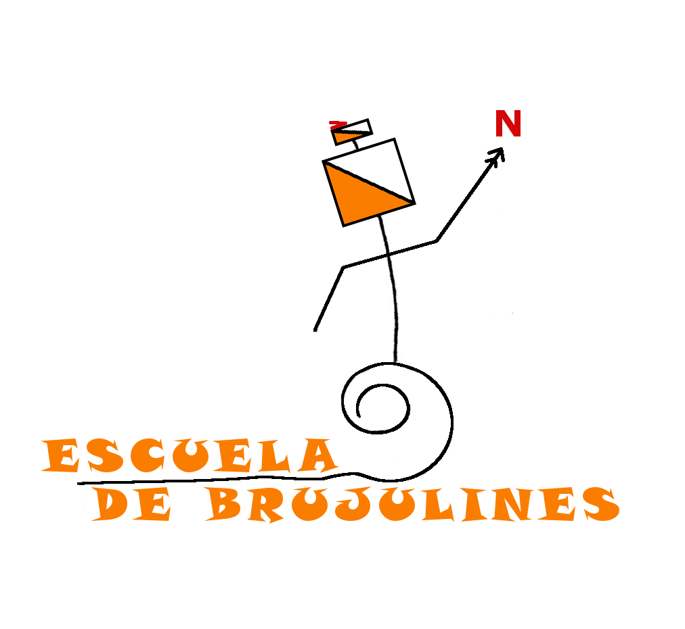

Un mapa es una representación del espacio. Utilizamos diversos tipos de mapas para transmitir información: topográficos, urbanos, de carreteras, geológicos, atmosféricos... El mapa utiliza un tipo de lenguaje comparable a las letras, las partituras musicales, los números, la pintura...
Desde el CRON consideramos muy importante el aprendizaje del "idioma de los mapas" como parte del desarrollo integral de la persona, y lo hacemos de forma lúdica, jugando a la orientación. Este deporte básicamente consiste en encontrar unas balizas con ayuda de un mapa y conjuga de forma única la actividad intelectual con la física, añadiendo el aliciente de realizarse al aire libre y en plena naturaleza.
¿Quieres aprender a leer mapas? ¿Te apuntas a jugar con nosotros?
Participantes
Socias y socios del CRON de cualquier edad y condición física y sus acompañantes, siempre que tengan ganas de aprender y pasárselo bien.
Contacta con nosotros
Escríbenos a: info@orientacron.es
